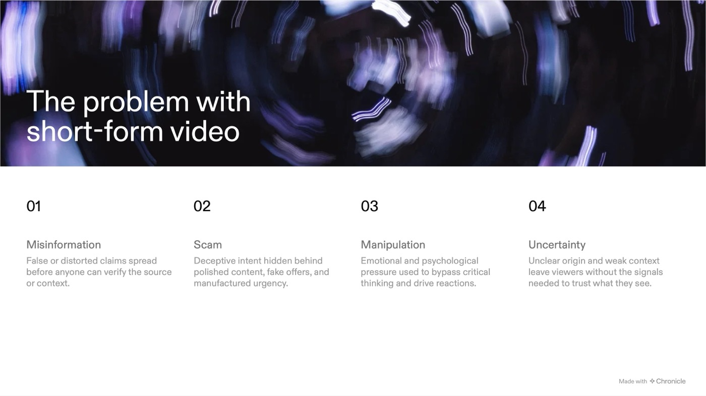
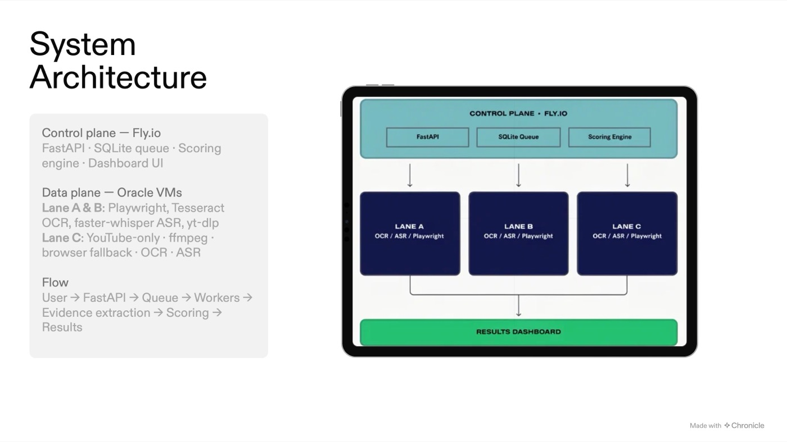
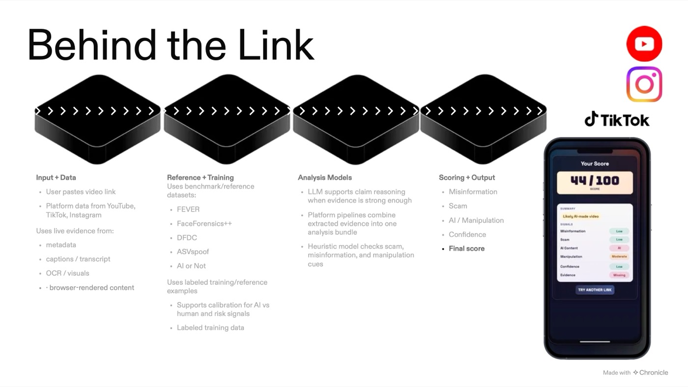
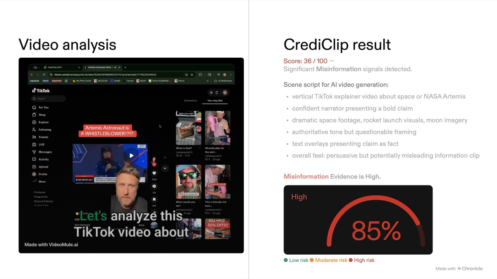
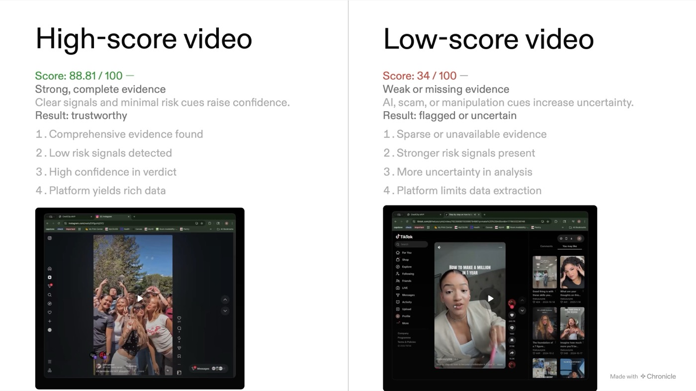

Abstract
Short-form video is now a primary channel for news, advice, and commerce, yet viewers rarely have a fast way to judge whether a clip is credible. This write-up documents CrediClip, a multi-platform system that accepts a public TikTok, Instagram, or YouTube Shorts URL and returns a 0 to 100 credibility score, risk flags for misinformation, scams, manipulation, and uncertainty, claim-level notes, and an explicit evidence-coverage breakdown. The system separates a lightweight control plane on @Fly.io from heavy media workers on @Oracle Cloud that perform browser rendering, OCR, and speech recognition. A deterministic scoring engine combines six signals and, critically, shrinks its output toward a neutral anchor when evidence is thin. Large language models are used only for gated claim assessment, never for the final number. Across a 780-link YouTube batch the system completed every job while correctly refusing to be confident on 97% of low-evidence inputs, and a worker-backed redesign for Instagram raised average extracted evidence from 1 token to 131 tokens per video. I discuss the design decisions, the failed benchmark gates that forced them, and the limitations that remain.
Keywords: credibility assessment, misinformation, short-form video, multimodal evidence extraction, OCR, ASR, LLM gating, trust and safety, explainable scoring, product management
1.Introduction
A 30-second clip can travel to millions of people before anyone checks its source. Research on social platforms has shown that false stories spread farther, faster, and deeper than true ones, largely because novelty and emotional charge drive sharing[1]. Short-form video amplifies that dynamic: the format is fast, the context is minimal, and the persuasive layer (music, captions, a confident face) does a lot of work that text alone cannot.
I framed the problem around four failure modes a viewer faces, which later became the system's risk dimensions:
- Misinformation: false or distorted claims spread before anyone can verify the source or context.
- Scams: deceptive intent hidden behind polished content, fake offers, and manufactured urgency.
- Manipulation: emotional pressure or synthetic media used to bypass critical thinking.
- Uncertainty: unclear origin and weak context that leave viewers without trustworthy signals.

The project was guided by three research questions:
- RQ1. Can a single link-only workflow recover enough evidence (captions, transcripts, on-screen text, speech) from three very different platforms to support a credibility judgment?
- RQ2. Can credibility be scored in a way that is explainable and reproducible, rather than delegated to a black-box model?
- RQ3. How should the system behave when evidence is missing, so that it does not manufacture false confidence?
3.Product framing
I approached CrediClip as a product owner first and a builder second. Before writing code, I defined who the user is, what job they are hiring the product to do, and what a minimum credible output looks like.
3.1 Users and jobs to be done
- Everyday viewers who want a quick "should I trust this?" signal before sharing.
- Moderators and trust-and-safety teams who need to triage large volumes of video with evidence attached.
- Fact-checkers and researchers who need a fast first pass to decide what deserves human review.
3.2 Product principles
- Link in, evidence out. The only required input is a URL. Caption and transcript fields are optional accelerators.
- Explain every number. Each score ships with the signals, flags, and evidence counts that produced it.
- Never fake certainty. When the system cannot see enough, the score says so by staying near neutral.
- Keep the score deterministic. The same evidence should always produce the same score, which makes the system auditable.
3.3 The user flow
- Paste a link. The user submits any public short-form video URL.
- Detect the platform. The system identifies Instagram, TikTok, or YouTube Shorts and routes to the right pipeline.
- Extract evidence. Workers pull metadata, captions, transcripts, OCR text, speech, and browser-rendered content.
- Score the signals. The engine evaluates misinformation, scam, AI content, manipulation, confidence, and evidence quality.
- Show the result. The user receives a compact, score-first card with plain-language explanations.
4.System architecture
The first version ran everything inside a single web process. That broke quickly: video download, Whisper transcription, and headless browsers are memory-hungry, and the small Fly machine was killed by out-of-memory errors under load. The fix was an architectural split between a control plane and a data plane.
Control plane · Fly.io
/api/analyze, job APIs/data/jobs.db, duplicate-job reuseData plane · Oracle Cloud VMs
Output
The request lifecycle follows five API steps: the client submits a URL (POST /api/jobs), a worker claims it
(POST /api/jobs/claim), the worker performs rich ingestion and uploads artifacts
(POST /api/jobs/{id}/artifacts), the server computes the final score, and the client polls for the result
(GET /api/jobs/{id}). This keeps the public web tier small and cheap while pushing expensive work to machines
that can afford it.
A second design decision was lane isolation. YouTube jobs are frequently slowed by anti-bot checks. When all platforms shared one worker, a single stuck YouTube job blocked Instagram and TikTok behind it. Moving YouTube to a dedicated lane (Lane C) and running two parallel lanes for the other platforms removed that head-of-line blocking.
Go deeper: engineering notes
For the code-level version of this section, including atomic job claiming with BEGIN IMMEDIATE, platform
routing filters, adapter interfaces, and stale-job recovery, read
Building a Multi-Lane Data Plane for Short-Form Video Credibility Analysis[13]
on the @CrediClip Engineering Notes blog.

5.Evidence extraction
Each platform exposes different data and blocks automated access in different ways, so each needed its own pipeline that
still returns the same evidence contract: caption, transcript, ocr,
asr, and notes.
| Platform | Primary path | Fallbacks | Status |
|---|---|---|---|
| Worker-side @Playwright browser render with authenticated session | Screenshot OCR, media download + local Whisper ASR | Strongest | |
| TikTok | Public metadata + browser-rendered page recovery | Screenshot OCR, media URL discovery + ASR, fast-mode early exit | Stable |
| YouTube Shorts | @yt-dlp metadata + youtube-transcript-api |
Subtitle-track parsing, oEmbed, watch-page scrape, ffmpeg frame OCR, Whisper ASR, YouTube Data API | Weakest |
An important engineering lesson was that public HTML is often useless. Instagram typically returns a generic app shell to unauthenticated server requests, which is why early Instagram runs extracted roughly one token of evidence per video. Real evidence only appeared once a headless browser rendered the page the way a human would see it, and richer audio only appeared once the worker had an authenticated session for media download.
The system also counts what it found. Every result includes an evidence_coverage object with total tokens,
per-channel tokens (caption, transcript, OCR, ASR), and an overall level of low, medium, or
high. That object is what lets the scoring engine, and the user, reason about how much to trust the output.
6.Claim verification
Once text is extracted, the system identifies candidate claims and checks them against a trusted-source retrieval corpus.
The baseline verifier is fully open-source: it retrieves relevant evidence chunks, applies lexical support and refute checks
with citations, and returns not_enough_evidence when support is weak.
Hosted and local LLMs are layered on top only when the evidence justifies it. I tested three options:
@OpenAI (gpt-5-mini)
for hosted reasoning, @OpenRouter
free-tier models, and @Ollama
running Qwen models locally on the worker. The local route proved impractical on a 1 GB Always Free VM, so production
uses OpenAI behind a platform-aware gate:
| Platform | Min. evidence tokens | Min. evidence level |
|---|---|---|
| 60 | medium | |
| TikTok | 50 | medium |
| YouTube Shorts | 20 | low |
Key design decision
The LLM produces structured claim assessments as JSON. It never writes the credibility score. Keeping the final number in deterministic application code means the score is reproducible, auditable, and not subject to prompt drift.
7.Scoring model
The scoring engine converts extracted evidence and claim assessments into six component signals, each on a 0 to 100 scale where higher means more risk: misinformation, scam, manipulation, uncertainty, evidence-quality penalty, and a separate generation-origin (AI vs human) flag. An analysis confidence value then decides how much the final score is allowed to move away from neutral.
The third step is the heart of RQ3. With rich evidence, c approaches 1 and the score reflects the detected
risks. With almost no evidence, c approaches 0 and the score converges on 52, a deliberately
neutral value that communicates "insufficient information" rather than "safe" or "dangerous". This is a simple form of
Bayesian-style shrinkage: the prior is neutrality, and only evidence earns the right to move away from it.
7.1 Component rules
- Misinformation averages per-claim penalties: refuted claims add 60 plus up to 35 points by confidence; unverifiable claims add a smaller penalty; supported claims add almost nothing.
- Scam scales with detected fraud cues such as guaranteed returns, urgency, and "DM me" patterns (20 points per cue above a base).
- Manipulation weights strong synthetic cues (deepfake, face swap, voice clone) above generic AI mentions, plus an optional external detector score.
- Evidence-quality penalty blends token depth (40%), transcript presence (20%), decisive claims (23%), and citation coverage (17%).
7.2 Generation-origin calibration
To estimate whether a clip is AI-generated, I built labeled data from two @Kaggle sources: an AI Shorts dataset by @aibuttonfoundation and a human Shorts dataset by @prince7489. When the human dataset turned out to contain synthetic IDs, I replaced it with labels scraped from real public human channels. A logistic calibrator trained on 183 rows is blended (70/30) with the heuristic score.
Explicit self-disclosure overrides calibration. If the caption says "#aigenerated" or "made with AI", the generation-origin score is floored at 85; weaker tags floor it at 65. When such a clip also has low evidence, credibility is capped at 44 or 49 respectively. This fixed an early bug where clearly labeled AI videos were being calibrated back to "human-generated likely".

8.Build log: how it came together
The project moved in phases, each ending with a benchmark that decided what to build next. Dates come from timestamped reports committed to the @GitHub repository.
-
Feb 25, 2026
Repository and MVP skeleton
FastAPI service with a synchronous
/api/analyzeendpoint, basic claim extraction, and a vanilla HTML/CSS/JS analyzer. -
Feb 26 – Mar 1
First validation and calibration
Random-sample validation scripts against the live API, mixed AI/human label construction, and threshold calibration reports.
-
Mar 3 – 4
Phase 1 readiness benchmark
A balanced 100-video benchmark with fixed seed. The system failed three of four quality gates (Section 9.1), which identified ingestion, not scoring, as the bottleneck.
-
Mar 5 – 11
Queue v2, Oracle workers, and scale tests
Moved heavy extraction to Oracle worker VMs behind a persistent queue, then ran batches of 251 and 780 links to test reliability.
-
Mar 13
Instagram Phase 2
Worker-backed browser ingest, authenticated media download, local Whisper ASR, and frame OCR. Evidence per video rose by two orders of magnitude.
-
Mar 16
Gated LLM comparison
Side-by-side runs of heuristic-only versus OpenAI-assisted claim assessment to justify where the LLM should engage.
-
Mar 19
Multi-platform stabilization
TikTok pipeline, split worker lanes, duplicate-job reuse, persistent queue storage, an operations dashboard, and a runtime optimization pass.
-
Apr 20
Health-check bundle
Diagnostics suite covering bytecode compilation, dependency checks, frontend syntax, and an isolated end-to-end queue workflow.
-
May 5 – 8
Demo alignment and final release
Compact score-first result UI, AI self-disclosure fixes, versioned results to avoid stale cache reuse, and the final @Chronicle presentation.
9.Evaluation & results
All numbers below come from reproducible report files in the repository's reports/ directory. I report failures
alongside successes, because the failures are what shaped the architecture.
9.1 Phase 1 readiness gates
Before expanding beyond YouTube, I defined four pass/fail gates and ran a balanced, seeded benchmark of 100 videos
(seed 20260303).
| Gate | Result | Threshold | Outcome |
|---|---|---|---|
| Ingestion success rate | 46% | ≥ 85% | Fail |
| "Not enough evidence" rate | 97.8% | ≤ 40% | Fail |
| Score standard deviation | 4.10 | ≥ 8.0 | Fail |
| Queue reliability | 97% | ≥ 95% | Pass |
The pattern was diagnostic. The queue worked, but the system could not see enough of each video to say anything decisive, so scores clustered tightly around neutral. That result redirected effort away from scoring tweaks and toward ingestion: browser rendering, authenticated workers, OCR, and ASR.
9.2 Reliability at scale
On a 780-link YouTube batch, every job completed. Because YouTube's anti-bot friction left most videos with only about 19 tokens of evidence, 754 of 780 scores landed below 55. This is the intended behavior: the system declined to make strong claims it could not support, which directly answers RQ3.
9.3 Instagram: before and after worker-backed ingestion
| Metric (19-link benchmark) | Before | After |
|---|---|---|
| Average evidence tokens | 1.0 | 130.9 |
| Median evidence tokens | 1 | 95 |
| Evidence level (low / medium / high) | 19 / 0 / 0 | 2 / 10 / 7 |
| Average credibility score | 52.63 | 69.97 |
The redesign answered RQ1 for Instagram. After authenticated media access was added, a single validation reel went from 85 to 184 evidence tokens, its transcript grew from 49 to 746 characters, and speech recognition contributed 79 tokens where it had contributed none.
9.4 Gated LLM assistance
On a small three-video comparison, enabling gated OpenAI claim assessment raised average credibility by +6.33 points and evidence tokens by +6.5, mainly by resolving claims that heuristics had left as "not enough evidence". The sample is too small to generalize from, so I treated it as a directional signal to keep the LLM behind the evidence gate rather than as proof of accuracy.
9.5 Runtime
- Rich Instagram analysis: 85.7 s → 61.6 s (−28%) after warm Chromium reuse and fast-mode cutoffs.
- TikTok worker probe (news clip): 33.9 s → 23.3 s (−31%).
- Production snapshot (Mar 19): 184 completed and 8 failed jobs (95.8% completion), with 31 of 31 diagnostics passing.
9.6 Generation-origin sanity check
On a 39-video labeled validation sample (25 AI, 14 human), the generation-origin rule classified every video correctly. I report this cautiously: the sample is small and overlaps with the label sources used for calibration, so it confirms the pipeline is wired correctly rather than demonstrating out-of-sample accuracy.
9.7 Illustrative outputs


10.Discussion
10.1 Evidence is the product
The single biggest lever on output quality was not the model; it was how much of the video the system could actually see. Every major jump in usefulness (Instagram's 131x evidence increase, the move from flat to differentiated scores) came from better extraction. For anyone building trust tooling, ingestion deserves at least as much investment as inference.
10.2 Honest uncertainty beats confident guessing
A credibility tool that confidently mislabels a video does more harm than one that says "I can't tell". Anchoring low-evidence results to a neutral 52 and surfacing evidence coverage next to every score made the system's limits visible to the user instead of hiding them.
10.3 LLMs as components, not oracles
Constraining the LLM to structured claim assessment, gating it on evidence thresholds, and keeping the final score in code gave the benefits of language reasoning without sacrificing reproducibility. It also controlled cost: the model is only called when there is enough material for it to add value.
10.4 Product lessons
- Benchmarks as decision gates. Pre-committing to pass/fail thresholds turned a disappointing result into a clear roadmap.
- Architecture follows constraints. Free-tier memory limits forced the control/data plane split, which turned out to be the right design anyway.
- Isolate the slowest dependency. Giving YouTube its own lane protected the experience on the other two platforms.
- Operational visibility matters. The live dashboard made it possible to demo, debug, and explain the system to non-engineers.
11.Limitations, threats to validity & ethics
- Platform access. YouTube remains the weakest path due to anti-bot and sign-in friction. Richer Instagram and TikTok extraction depends on authenticated worker sessions, which raises terms-of-service and sustainability questions for any production deployment.
- Hand-set weights. The six-signal weights were chosen by design reasoning and iteration, not learned from a large labeled credibility dataset.
- Small labeled samples. Several evaluations (LLM comparison, generation-origin check) use small samples and should be read as directional.
- Corpus coverage. Claim verification can only be as good as the trusted-source corpus it retrieves from.
- Language and modality. OCR and ASR work best on clear, English-language content. Visual deepfake detection is not yet performed directly on frames.
- Curated demo layer. A small override list keeps a handful of presentation examples consistent during live demos. Benchmark figures in Section 9 come from batch runs, not from that list.
Responsible use
CrediClip is a decision-support signal, not a verdict. A low score means "look closer", not "this is false". It is designed to help people and moderators prioritize attention, with the evidence visible so a human can make the final call.
12.Applications
- Moderation triage: surface suspect videos with evidence-backed reasoning so human reviewers start with the highest-risk queue.
- Trust-and-safety API: a credibility layer that platforms or brand-safety tools can call inside existing workflows.
- Fact-checking support: faster screening of high-volume video so fact-checkers spend time where it matters.
- Media literacy: transparent credibility framing that teaches end users what signals to look for.
13.Future work
- Formal evaluation of the manipulation signal on FaceForensics++, DFDC, and ASVspoof[3][4][5].
- Vector retrieval (FAISS or pgvector) and a larger trusted corpus to raise claim-verification recall.
- Learned signal weights from a labeled credibility dataset, with calibration curves reported per platform.
- Postgres-backed analysis history, authentication, and role-based dashboards for moderators and researchers.
- Larger worker VMs to make local LLM inference viable and reduce dependence on hosted APIs.
- Multilingual OCR and ASR support.
14.Conclusion
CrediClip shows that a small team, or in this case a single product-minded builder, can ship a working, multi-platform credibility system on free and low-cost infrastructure. On the three research questions: link-only evidence recovery is feasible but platform-dependent (RQ1); a deterministic, six-signal score with visible evidence makes credibility explainable and reproducible (RQ2); and shrinking toward a neutral anchor under thin evidence is a simple, effective guard against false confidence (RQ3).
The broader takeaway is a product one. In trust tooling, the most valuable thing a system can do is be honest about what it knows. Link in, evidence out, clearer trust signal.
Tools & stack
References
- Vosoughi, S., Roy, D., & Aral, S. (2018). The spread of true and false news online. Science, 359(6380), 1146–1151. https://doi.org/10.1126/science.aap9559
- Thorne, J., Vlachos, A., Christodoulopoulos, C., & Mittal, A. (2018). FEVER: A large-scale dataset for Fact Extraction and VERification. Proceedings of NAACL-HLT 2018, 809–819. https://aclanthology.org/N18-1074/
- Rössler, A., Cozzolino, D., Verdoliva, L., Riess, C., Thies, J., & Nießner, M. (2019). FaceForensics++: Learning to detect manipulated facial images. Proceedings of ICCV 2019. https://arxiv.org/abs/1901.08971
- Dolhansky, B., Bitton, J., Pflaum, B., Lu, J., Howes, R., Wang, M., & Canton Ferrer, C. (2020). The DeepFake Detection Challenge (DFDC) dataset. arXiv:2006.07397. https://arxiv.org/abs/2006.07397
- Todisco, M., Wang, X., Vestman, V., Sahidullah, M., Delgado, H., Nautsch, A., Yamagishi, J., Evans, N., Kinnunen, T., & Lee, K. A. (2019). ASVspoof 2019: Future horizons in spoofed and fake audio detection. Proceedings of Interspeech 2019, 1008–1012. https://arxiv.org/abs/1904.05441
- Radford, A., Kim, J. W., Xu, T., Brockman, G., McLeavey, C., & Sutskever, I. (2023). Robust speech recognition via large-scale weak supervision. Proceedings of ICML 2023. https://arxiv.org/abs/2212.04356
- Smith, R. (2007). An overview of the Tesseract OCR engine. Proceedings of ICDAR 2007, 629–633. https://doi.org/10.1109/ICDAR.2007.4376991
- AI Button Foundation. (n.d.). YouTube AI slop Shorts dataset [Data set]. Kaggle. kaggle.com/datasets/aibuttonfoundation/youtube-ai-slop-shorts-dataset
- prince7489. (n.d.). YouTube Shorts performance dataset [Data set]. Kaggle. kaggle.com/datasets/prince7489/youtube-shorts-performance-dataset
- Raza, A. (2026). CrediClip: Multi-platform credibility analysis for short-form video [Source code and benchmark reports]. GitHub. https://github.com/aliraza2025/CrediClip
- Raza, A. (2026). CrediClip: AI-powered credibility analysis for short-form video [Presentation]. Chronicle. Chronicle deck
- Raza, A. (2026). CrediClip [LinkedIn post]. LinkedIn. linkedin.com/posts/ali-raza-2548880_crediclip-readme
- Raza, A. (2026, October 14). Building a multi-lane data plane for short-form video credibility analysis. CrediClip Engineering Notes. https://aliraza2025.github.io/CrediClip/data-plane/
- Raza, A. (2026). CrediClip Engineering Notes [Technical blog]. GitHub Pages. https://aliraza2025.github.io/CrediClip/